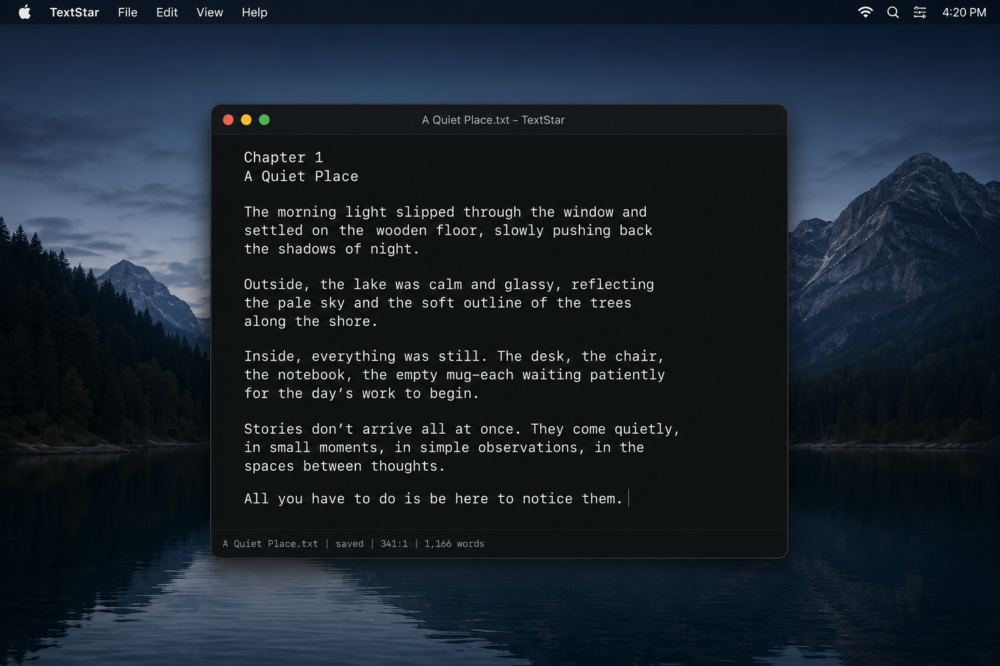

Distraction-Free Full Screen
A calm writing space that removes visual noise so you can stay with the sentence in front of you.
The words come first.
TextStar gives writers a clean, focused place to draft novels, essays, chapters, and long-form work without formatting clutter, spell-check interruptions, AI suggestions, or unnecessary tools.

TextStar is a distraction-free editor designed for serious writing.
Whether you are drafting a novel, shaping an essay, or capturing a quiet idea, TextStar gives you a clean, focused space where the words come first.
Philosophy
Modern writing software often tries to become everything: layout tool, collaboration tool, grammar assistant, cloud workspace, formatting engine, and suggestion machine.
TextStar takes the opposite approach. It gives the writer a quiet surface, reliable files, and commands that stay out of the way until needed.
Features
A calm writing space that removes visual noise so you can stay with the sentence in front of you.
Commands are always available. The more you write, the less you reach for the mouse.
TextStar does not interrupt your draft with suggestions, corrections, or machine-written alternatives.
Keep your work durable, portable, and easy to control.
Save your writing to EPUB when you are ready to package your work for readers.
A simple, fast editor designed for novels, essays, chapters, and manuscripts.
Who it is for
TextStar is for novelists, essayists, journalists, short story writers, memoirists, academics, technical writers, and anyone who prefers a quiet editor over a busy document suite.
What TextStar is not
TextStar is a place to write.
Mac ONLY
TextStar is being built for Mac and will only be available through the Mac App Store.
Requires macOS 15 (Sequoia) or newer. Built for M-Series arm64 Macs.